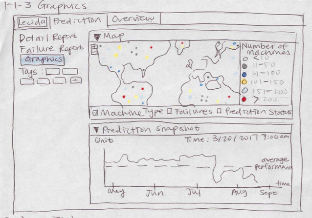
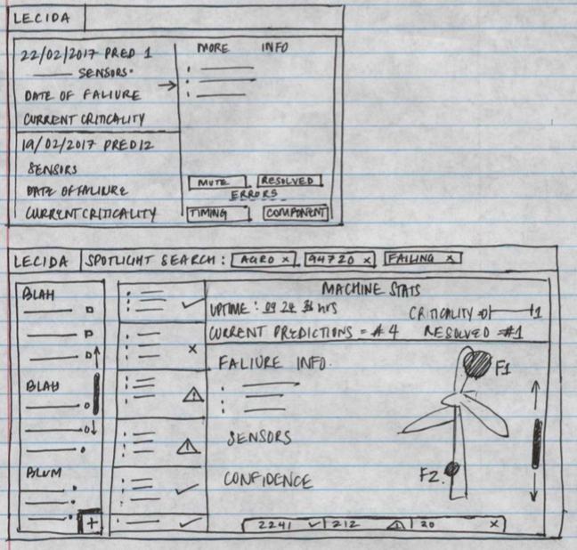
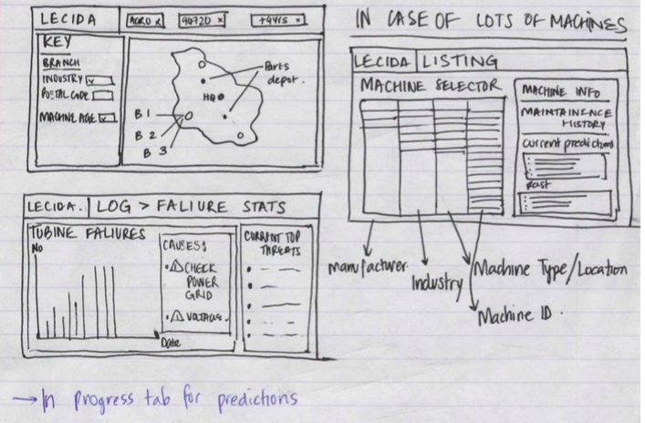
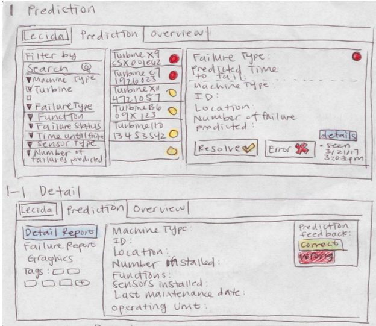
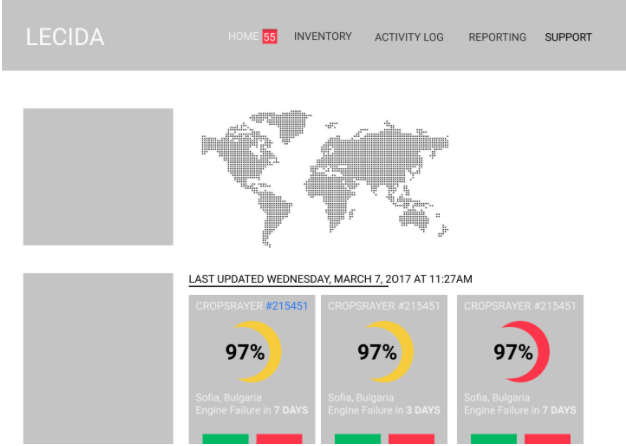
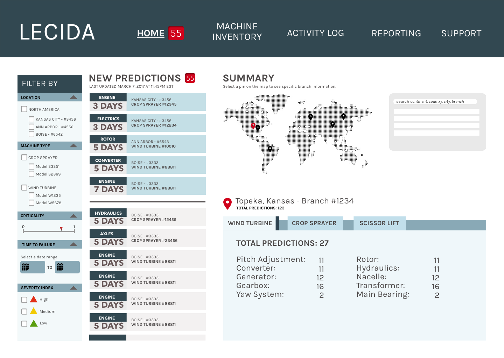
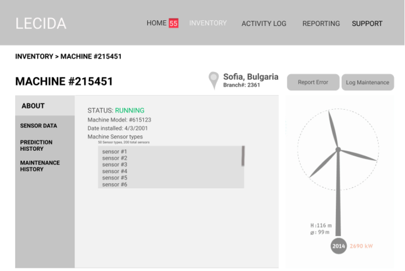
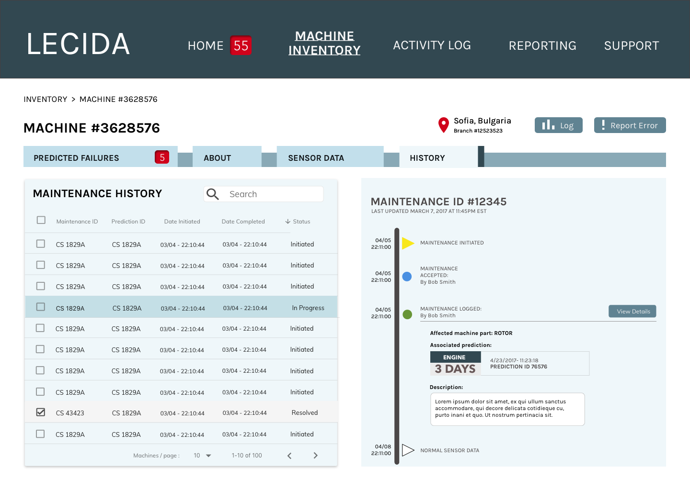

OVERVIEW
Through Berkeley Innovation, my team partnered with Lecida, a predictive maintenance system for industrial equipment which aims to use machine learning to optimize performance. They wanted us to design an interface for the web application, which would allow users to see the status of different machines and choose corresponding action items. (Scroll all the way down to see an interactive prototype).
THE PROBLEM
Whenever an industrial machine experiences a failure and goes down (think windmills, crop sprayers, and other large-scale machines), thousands of dollars are lost. If there was an easy way for manufacturers to know in advance if a certain machine is likely to fail, then they could arrange to have the machine fixed or replaced before a failure.
Therefore, the research question we formulated was:
How might we help manufacturers pinpoint the cause of a machine malfunction and make an educated decision about handling it?
RESEARCH
Because most of us had no experience dealing with industrial machines, we set out to do some background research to better understand the different factors that go into machine maintenance and all the different people involved with the reparing process. We had the opportunity to speak with Timothy Chou, a Stanford professor who wrote a book called Precision about the Internet of Things applied to industrial machinery. We learned that when a machine fails, it usually means that a certain part of the machine has experienced a failure (due to overheating, manufacturing defects, etc.). Researching into the different types of failures helped us solidify a list of information that needed to be displayed. This was an overwhelming list at first, because each machine can have hundreds of sensors that collect data constantly. Our challenge was figuring out how to display this information in a readable and intuitive format.
INITIAL SKETCHES
After we developed an information hierarchy, we made some initial sketches to lay out the information. Some of the key features we chose to include in our preliminary drafts included:
- Map to show location of machines around world, with a color indicator of the machines' status in the area
- An inbox-type area to see key information for all predicted machine failures
- An expanded prediction report, with detailed information about the prediction and machine status




FROM LOW FIDELITY TO HIGH FIDELITY
This was an incredibly iterative process. For each rough mockup we made, we then realized we needed to include more information to make the platform more intuitive. Some key pieces of information that we had not anticipated to begin with included:
- Timeline of a machine's ongoing maintenance history, and the ability to mark the problem as resolved
- A way to report false negatives and false positives, along with detailed reporting forms to improve the prediction algorithm
- A way to record and distinguish between predicted failures and actual failures (false negatives)
- A way to record maintenance updates
HOME (THE PREDICTION PAGE)
We decided to have the "home" screen be an inbox of incoming predicted failures, because this is the information that is most important to see and the main focus of the platform. MID FIDELITY

HI FIDELITY

In our final designs, we instead decided to display predicted failures in an email-inbox design, with limited quantities of information (the most important details) as the previews. Then, the user could click into each one to view relevant details. Another important feature we included was a summary box under the map, so a user could click into any of the branches they own globally and then see summary statistics of machines at that location. This could be helpful to identify faulty machines at a particular location.
THE MACHINE PAGE
We realized it was also important for a manufacturer to be able to see specific details and a history of a particular machine. Important details to view include a rough summary of the machine's specs, an easy visual display of it's sensor data, and a maintenance and prediction history.
MID FIDELITY

HI FIDELITY

From this page, users also have the ability to log maintenance and to report a false positive or false negative.
FINAL PRESENTATION
INTERACTIVE PROTOTYPE